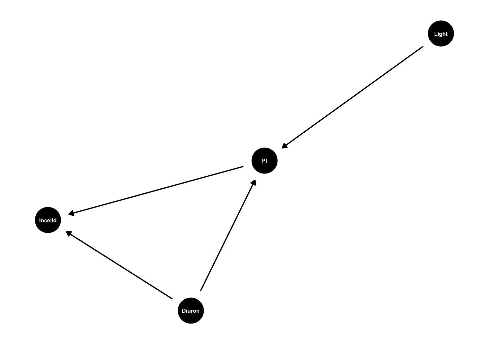
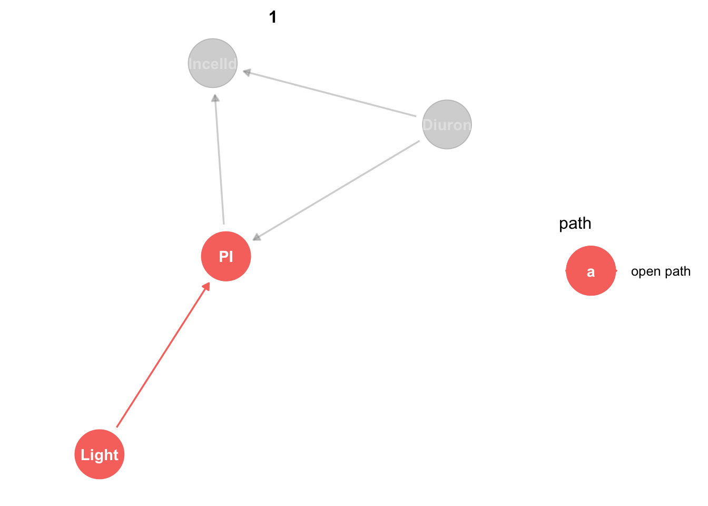
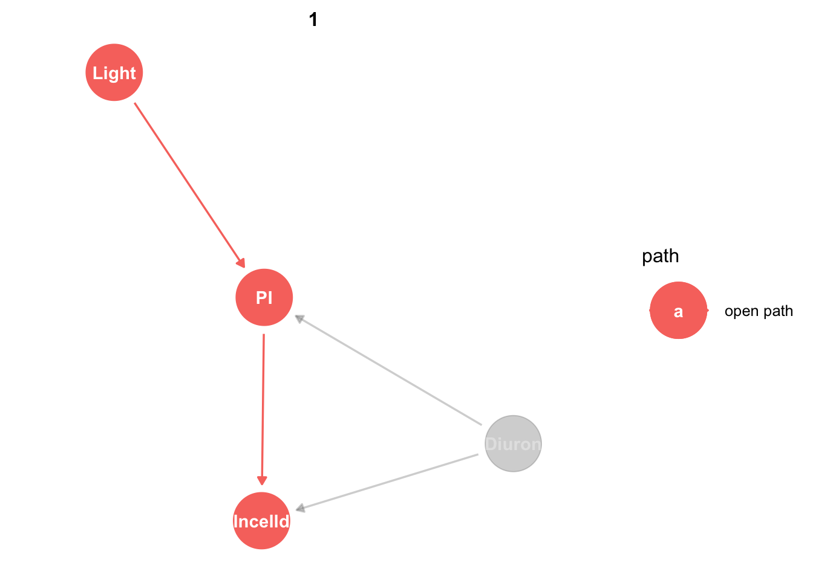
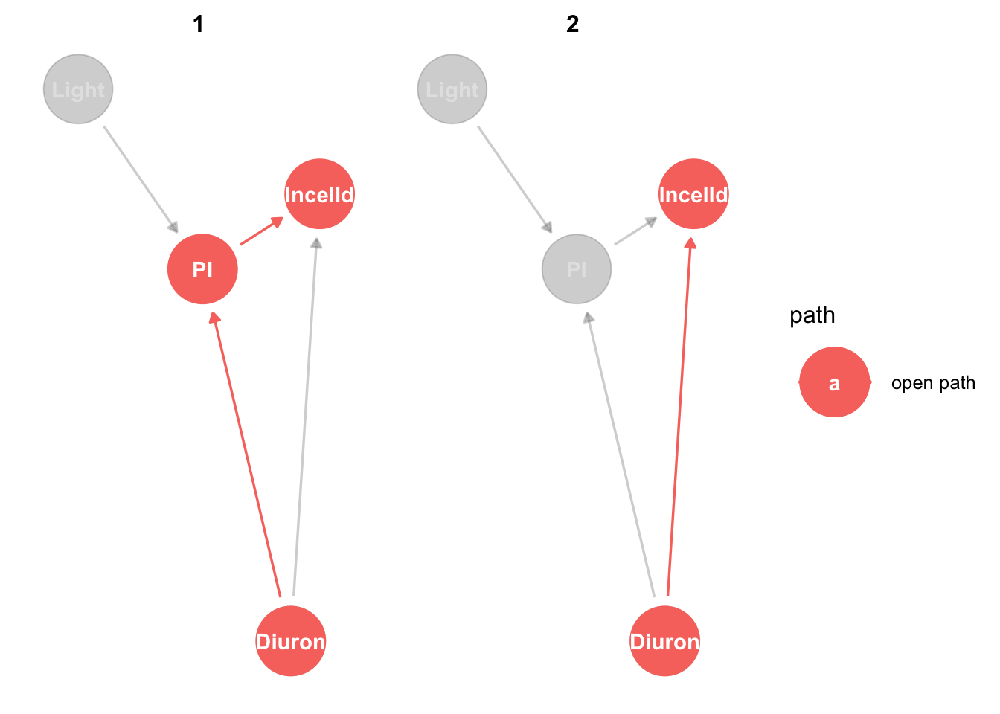
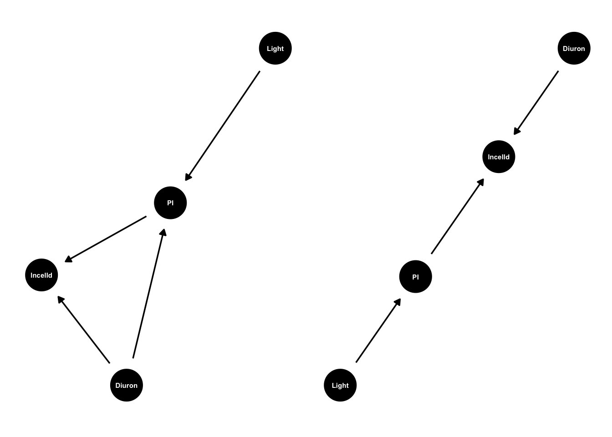

install.packages(c("dagitty", "tidyverse", "ggdag", "visreg", "patchwork"))Introduction to structural causal modelling
Introduction to structural causal modelling
A/Prof Christopher J. Brown
Institute for Marine and Antarctic Studies, University of Tasmania, Australia
2023-06-30
Introduction
What you need
This is a workshop on structural causal modelling. It is designed to be run alone, or paired with a course on generalized linear models. It is designed to take about 1/2 a day to teach. The examples are drawn from ecology and conservation science, but the theory is applicable to any science, particularly if it is using observational data (rather than controlled experiments).
Before starting you will need to download this data.
You will need to install these R packages: dagitty, tidyverse, ggdag:
We will cover some background theory, then we’ll launch into learning the approach with R. This course takes a philosophy of learning by doing, so we will mostly learn through doing the analyses.
Why do we need stuctural causal modelling?
A primary goal of science is to understand causes. Some contemporary examples in ecology and conservation include:
What caused a fish population to collapse? Was it overfishing or climate change or both?
Do ecosystem functions, like primary productivity, depend on species richness?
Is temperature a cause of tree flowering and tree survival?
Causality also underpins questions about whether management interventions are working, like:
Do entry fees to marine parks improve management and ecological outcomes?
Do oil palm plantations with sustainability certification have lower rates of rainforest loss?
Do total allowable catch limits result in sustainable fishery management?
Inferring causality is challenging because there are many potential confounding explanations for any observation we make. Therefore, conventional approaches hold that causality can only be inferred from manipulative experiments, specifically, randomized control trials. In such experiments the experimenter has control over different potential causes, so they can exclude some to study the hypothesized cause of interest.
Say we were interested to know if low light from pollution causes loss of seagrass meadows. We come up with a design where we compare the cover of seagrass in two estuaries, one estuary has good light, on estuary has low light. We find there is less seagrass in the estuary with low light. However, we cannot conclude that low light is a cause of seagrass loss, because there are many other ways the two estuaries could be different. For instance, they may be different sizes, have different tides and different levels of other human pressures, like boat anchoring.
Conventional approaches tell us we need to use a randomized control trial. So we pick large number of healthy estuaries and randomly allocate them treatment and control groups. In the treatment estuaries we dump a lot of pollution so as to reduce light levels. The control estuaries we leave as is. By randomizing we have removed confounders, because differences between estuaries are no longer correlated with low light.
However, clearly this design is unethical and logistically impossible.
So a more common approach is to change the scale. We work with small 1x1 metre plots instead of whole estuaries, and randomly allocate plots to shaded or unshaded treatments. This is much more practical (and ethically sound), but now we have changed the scale of our study. If we discover low light causes seagrass loss at the 1x1 metres scale, it will be hard to say if the same holds at the scale of a whole estuary.
In ecology and conservation many questions we need answers to are not amenable to randomized experimental designs. We can go out in the real world and make observations. We can often randomize when or where we take observations (such as choosing meadows to sample at random). But we cannot randomize application of treatments. So we need another way to ask causal questions.
Enter the logic of structural causal modelling.
Correlation is causation, with some conditions
Unfortunately we’ve had it drilled into our heads that correlation is not causation and we should never talk about causation when we are interpreting observational data.
By observational data I mean any data you collect that is not from a manipulative experiment that has randomized application of treatments. In fact, there is a grey area here, because many manipulative experiments also suffer from issues of confounding, as we will see later.
I’ve had numerous reviewers force me into softening language like: “fish biomass was higher in protected areas” or “greater warming caused faster rates of species migration”, into phrases like “fish biomass was associated with protection” or “greater warming was correlated with faster species migration”.
These reviewers are picking up on a debate that goes back to the late 1800s. You can read the details in Pearl’s book on causation. But the gist is that we are still influenced by long past statisticians, especially Fisher (inventor of p-values) and Pearson (inventor of correlation coefficient). Fisher effectively declared that correlation was not causation and that randomized control trials are the only way to infer causation. Then he viciously attacked anyone who proposed alternative methodologies.
Back in the early to mid 1900s there were alternative methods, like path analysis that was developed by Wright and taken further later on by social scientists, but these got lost to much of science (including ecology) thanks to the influence of people like Fisher.
Too bad for Fisher who was a chain smoker and died of lung cancer: he refused to believe that smoking was a cause of lung cancer, in part because there was not randomized control trial evidence.
But getting such evidence is impossible if not unethical. Randomly allocating people to smoking and non-smoking treatments then following them for years to see who gets cancer. So we need another way to study causation.
So know we are stuck with writing around what we really mean. Even though many studies are fundamentally about causation, we are not allowed to use those words. We have to say ‘association’ and let the reader put 2 and 2 together in their head. I think this is a source of much confusing.
Fortunately, social scientists and slightly more recently (since 1980s) artificial intelligence researchers continued to look at how we can infer causation from correlations in observational data.
What they’ve shown is that there is a very robust logic that can be used to infer causation from correlation. This logic is called Structural Causal Modelling (SCM) Pearl.
What SCM means for ecologists and conservation science is that we can now ask causal questions about our observational data. It also means we can stop beating around the bush when writing up our studies. We no longer need to say ‘associated’ when we actually mean ‘caused’.
All you have to do is follow the logic of SCM when developing your study and analysis. There’s also a few assumptions you need to know about that differ from the traditional assumptions we make when interpreting causation from randomized experiments.
There’s one further, huge bonus to SCM: we don’t need to learn any new statistical tests beyond the tests that ecologists normally learn, like generalized linear (or additive) models. SCM is totally compatible with our well honed approaches to studying associations.
Let’s get started
SCM 101
There are seven steps to SCM in ecology/conservation. My seven steps are loosely based on five steps proposed by other authors, with modifications based on my experience.
There’s roughly two versions of SCM out there right now as well. What I call SCM Classic and SCM Comprehensive.
The first five steps will lead us to a causal test of a particular relationship of interest, say do protected areas influence fish biomass? We then modify and repeat for different causes (step 6) or alternative hypotheses for the model (step 7). We will cover these:
- Create a conceptual model of your study system
- Choose a statistical test
- Test consistency of your conceptual model with your data (optional)
- Identify confounding variables of you need to adjust for when testing the cause of interest
- Test for causality with your statistical test
- Repeat steps 3-5 above for other causes of interest
- Repeat steps 1-6 for other conceptual models
We will cover steps 1,2,4,5,6 in this course. I call this approach that skips step 3 SCM Classic. You can add Step 3 for a full SCM-SEM approach “SCM Comprehensive”. SEM is already well covered elsewhere so I will only cover it briefly here. Step 3 is also not essential for many applications of SCM, as we’ll see later.
First example
Let’s work through a complete example so you can see SCM in action. Then we will loop back and cover some more of the theory.
We will work with data from Olivia King’s multi-stressor experiment (King et al. 2022). Olivia was interested how low light and diuron, a herbicide, interact to affect algae. She set up an experiment where algae were exposed to combinations of different light levels and diuron. Then at increments over 72 hours she measured chlorophyll-a fluorescence (an indicator of ability to photosynthesize) and cell density (an indicator of cell abundance).
Our question here is how do diuron and light interact to affect fluorescence and cell density? Cell density should also be related to fluorescence, because cells with higher fluorescence should produce more energy for growth.
Variables in the dataset are: Time of measurement, Light level, Diuron level, experimental Block, t0 (density at time zero), lncelld (log of cell density), and PI (related to fluorescence). See King’s paper and supplemental material for the original data and metadata.
Watch more about the experiment
Step 1 Define a conceptual model (a DAG)
Let’s define our conceptual model first. We don’t need any data to do this, just some knowledge of the system. Formally, our model needs to be a ‘DAG’ -> Directed Acyclical Graph. This means it has nodes representing variables, arrows representing causes. The arrows are directional. Also there can be no cycles ie the graph can’t be recursive.
We can represent our models as a series of formulas like normal R formulas. Then can check how it looks with the ggdag package:
library(ggplot2)
library(patchwork)
library(ggdag)
Attaching package: 'ggdag'The following object is masked from 'package:stats':
filterlibrary(dagitty)
theme_set(theme_dag())
king_mod <- dagify(lncelld ~ PI + Diuron,
PI ~ Light + Diuron)
g1 <- ggdag(king_mod, text_size = 2,
node_size = 12)
g1
In our hypothesized model PI (fluorescence) responds to light level, because more light generally = more photosynthesis. Diuron affects PI and cell density. Diuron blocks photosynthesis so should reduce PI. Diuron also causes cell damage so may have other direct effects on growth and cell density.
In the language of causal models we’d say that PI mediates the effect of light on cell density.
The arrows represent hypothesized causal effect that we’ll test later. By drawing them we are saying ‘this might be a cause’, we are not assuming it absolutely is a cause. We will test that assumption with the data.
Also note arrows now drawn. There is no arrow from light to lncelld. These undrawn arrows are our strongest assumptions. In this model we are assuming all the causal effects of light on cell density go via PI. So there is no other direct or indirect ways light can cause changes in lncelld.
Justifying the theory that underlies our DAG is key here. This theory is based on early studies and our understanding of causality in the system.
For instance, if you read King’s paper and/or her review on effects of light and herbicides on marine primary producers, you will see she explains in the physiology of how Diuron can affect cell growth, e.g. an excerpt from the study’s discussion:
Photosynthetic efficiency is strongly affected by diuron and other PSII-inhibiting herbicides, as these herbicides block electron transport in the PSII-complex, inhibiting photo- synthesis [48]. Thus, interactive effects for photosynthetic inhibition were observed much sooner at 2 h or less, com- pared to that of growth inhibition observed at 24 h or more.
She’s written about the physiology processes underlying her hypothesized conceptual model (even though she didn’t formally create a DAG in that study) and supported these with references.
Let’s also load the data now, so we have it for later
king <- read.csv("data/Kings-multistressor-experiment.csv")
head(king) Time Light Diuron Block t0 celld lncelld PI
1 72 20 0.11 2 35.24612 125.9434 4.835833 1.0123902
2 72 20 0.11 3 39.63470 114.6585 4.741958 0.9292967
3 72 20 0.11 4 34.61918 167.3215 5.119917 0.9773639
4 72 20 0.33 2 35.45510 126.7794 4.842448 1.0277136
5 72 20 0.33 3 45.69512 155.2006 5.044719 0.9501699
6 72 20 0.33 4 46.53104 162.7239 5.092055 0.9720600This abridged dataset only has measurements at the end of the experiment (72 hours), so we don’t need to consider time in our analysis.
Step 2 Choose a statistical test
Let’s work with general linear models for now. We will come back and fill in the modelling details later. For now, if you are not familiar with linear models, just know these are just simple regression models, but that allow for groups as inputs. We can implement them with the lm function in R.
Step 3 Test consistency of your conceptual model with your data (optional)
This step basically amounts to testing whether our assumptions about the undrawn arrows are consistent with the patterns in the data.
We won’t cover much of this step in this course, it would require another full day. This step basically amounts to structural equation modelling (SEM). But the theory you will learn in this course will help you understand structural equation modelling, because these models are also based on DAGs. But in brief, we can test whether our overall model structure is consistent with the data. The piecewiseSEM package is one way to do that. It asks whether there are any significant relationships in the data that aren’t explained by our DAG.
If you want the code for this data it would look like this:
library(piecewiseSEM)
king_psem <- psem(
lm(lncelld ~ PI + Diuron, data = king),
lm(PI ~ Diuron + Light,data = king)
)
summary(king_psem)We will get from the summary an overall p-value telling us if the model is consistent with our data. Read more about SEM and piecewiseSEM in Jon Lefcheck’s live book or the Bill Shipley book and papers.
Step 4 Identify confounding variables of you need to adjust for when testing the cause of interest
Now we get to the structural causal modelling. At this step we want to put quantities on the arrows we’ve drawn, and test the causes.
Let’s look at an easy one first. How does light affect PI?
We can add our paths of interest to our plot with ggdag_paths:
king_mod %>%
ggdag_paths(from="Light", to = "PI", shadow = TRUE)
Obviously light only affects PI by one direct effect. Don’t worry about the ‘open path’ label, we’ll come back to that.
We can then use dagitty to identify adjustments sets:
adjustmentSets(king_mod,
exposure = "Light",
outcome = "PI",
type = "minimal",
effect = "total") {}No adjustment sets. We can also ask for canonical adjustment sets:
adjustmentSets(king_mod,
exposure = "Light",
outcome = "PI",
type = "canonical",
effect = "total"){ Diuron }In this case conditioning on Diuron is optional. If we do that though we will get more power to detect a light effect, because conditioning on Diuron will help explain some of the residual variation.
Step 5 Test for causality with your statistical test
Now we know what do condition on, we just run the tests, same as any old R regression we would have done. The minimal one first:
mod_pi_min <- lm(PI ~Light,data = king)
summary(mod_pi_min)
Call:
lm(formula = PI ~ Light, data = king)
Residuals:
Min 1Q Median 3Q Max
-0.41303 -0.13167 -0.06016 0.10073 0.39896
Coefficients:
Estimate Std. Error t value Pr(>|t|)
(Intercept) 1.1513785 0.0448196 25.689 < 2e-16 ***
Light -0.0039417 0.0009397 -4.195 0.000134 ***
---
Signif. codes: 0 '***' 0.001 '**' 0.01 '*' 0.05 '.' 0.1 ' ' 1
Residual standard error: 0.2043 on 43 degrees of freedom
Multiple R-squared: 0.2904, Adjusted R-squared: 0.2739
F-statistic: 17.6 on 1 and 43 DF, p-value: 0.000134We see a significant negative effect of light on PI, ie more light, lower PI. You should also check standard model assumptions, which we’ll get to later.
So why bother doing the DAG and SCM when the above model is what we would have done anyway? Well in this trivial case it makes little difference. But in more complex cases the model to run will not be as obvious.
When our models are backed up by SCM we can make causal interpretations of the results. So rather than saying ‘lower PI was associated with higher light’, I can say ‘higher light caused lower PI’. This is really powerful change in language, especially if we are working with field datasets.
The statement of caused rests on the assumptions we made in drawing the DAG.
Let’s also look at a test with the canonical adjustment sets. In fact in this experiment Diuron and light treatments are crossed, so we should also consider an interaction between Diuron and light. The interaction is implicit in the DAG, because Diuron and Light both have arrows to PI.
lm(PI ~Light * Diuron,data = king) %>%
summary()
Call:
lm(formula = PI ~ Light * Diuron, data = king)
Residuals:
Min 1Q Median 3Q Max
-0.21978 -0.15899 -0.00171 0.08416 0.32268
Coefficients:
Estimate Std. Error t value Pr(>|t|)
(Intercept) 1.2400393 0.0497432 24.929 < 2e-16 ***
Light -0.0040524 0.0010429 -3.886 0.000365 ***
Diuron -0.0998433 0.0349629 -2.856 0.006710 **
Light:Diuron 0.0001248 0.0007330 0.170 0.865684
---
Signif. codes: 0 '***' 0.001 '**' 0.01 '*' 0.05 '.' 0.1 ' ' 1
Residual standard error: 0.1771 on 41 degrees of freedom
Multiple R-squared: 0.4912, Adjusted R-squared: 0.454
F-statistic: 13.2 on 3 and 41 DF, p-value: 3.594e-06Step 6 repeat for other causes
So now we’ve seen how to applyl SCM to really obvious causal tests, let’s look at some more complex cases. A key difference with SCM and traditional ecostats is that we may have multiple different stats tests for the same variable. Each of these tests will be testing a different cause.
Let’s look at lncelld.
king_mod %>%
ggdag_paths(from="Light", to = "lncelld", shadow = TRUE)
The adjustment set:
adjustmentSets(king_mod,
exposure = "Light",
outcome = "lncelld",
type = "canonical",
effect = "total"){ Diuron }So we just do the test:
lm(lncelld ~ Light * Diuron,data = king) %>%
summary()
Call:
lm(formula = lncelld ~ Light * Diuron, data = king)
Residuals:
Min 1Q Median 3Q Max
-1.05478 -0.14454 0.02972 0.11077 0.72435
Coefficients:
Estimate Std. Error t value Pr(>|t|)
(Intercept) 5.066505 0.077613 65.279 < 2e-16 ***
Light -0.001361 0.001627 -0.837 0.40770
Diuron -0.139207 0.054552 -2.552 0.01454 *
Light:Diuron 0.003288 0.001144 2.875 0.00639 **
---
Signif. codes: 0 '***' 0.001 '**' 0.01 '*' 0.05 '.' 0.1 ' ' 1
Residual standard error: 0.2764 on 41 degrees of freedom
Multiple R-squared: 0.1991, Adjusted R-squared: 0.1405
F-statistic: 3.397 on 3 and 41 DF, p-value: 0.02664This is the total effect of light on cell density. Note the interaction.
Now we can’t use the Diuron effects above just yet. We need to do the SCM:
king_mod %>%
ggdag_paths(from="Diuron", to = "lncelld", shadow = TRUE)
Now it gets slightly more interesting. There are two ways Diuron can have a casual effect on lncelld, directly and via PI.
The adjustment set:
adjustmentSets(king_mod,
exposure = "Diuron",
outcome = "lncelld",
type = "canonical",
effect = "total"){ Light }That is the same test as we did above, so we make the causal interpretation of the Diuron by light interaction.
What if want to just know the direct effect of Diuron on cell density?
adjustmentSets(king_mod,
exposure = "Diuron",
outcome = "lncelld",
type = "minimal",
effect = "direct"){ PI }We need to condition on PI. This is so we block (‘close’) the PI to cell density arrow. Then we are only estimating the effect of diuron on lncelld:
lm(lncelld ~ PI + Diuron,data = king) %>%
summary()
Call:
lm(formula = lncelld ~ PI + Diuron, data = king)
Residuals:
Min 1Q Median 3Q Max
-1.17329 -0.11575 0.03072 0.12553 0.56188
Coefficients:
Estimate Std. Error t value Pr(>|t|)
(Intercept) 5.48814 0.22995 23.866 <2e-16 ***
PI -0.42731 0.20328 -2.102 0.0416 *
Diuron -0.06494 0.04335 -1.498 0.1416
---
Signif. codes: 0 '***' 0.001 '**' 0.01 '*' 0.05 '.' 0.1 ' ' 1
Residual standard error: 0.289 on 42 degrees of freedom
Multiple R-squared: 0.1027, Adjusted R-squared: 0.05996
F-statistic: 2.403 on 2 and 42 DF, p-value: 0.1028And we see Diuron has no direct effect on cell density.
Likewise if we want to know what the direct effect of PI on cell density is we should do this:
adjustmentSets(king_mod,
exposure = "PI",
outcome = "lncelld",
type = "minimal",
effect = "direct"){ Diuron }Which is just the same as the model we just did, where we saw PI has a negative effect on cell density.
If we took the traditional non-causal approach to this analysis, we might do a model like this:
lm(lncelld ~ Light + Diuron + PI,data = king) %>%
summary()
Call:
lm(formula = lncelld ~ Light + Diuron + PI, data = king)
Residuals:
Min 1Q Median 3Q Max
-1.17340 -0.10971 0.03593 0.12077 0.55742
Coefficients:
Estimate Std. Error t value Pr(>|t|)
(Intercept) 5.515098 0.326919 16.870 <2e-16 ***
Light -0.000198 0.001686 -0.117 0.9071
Diuron -0.066677 0.046303 -1.440 0.1575
PI -0.445553 0.257782 -1.728 0.0914 .
---
Signif. codes: 0 '***' 0.001 '**' 0.01 '*' 0.05 '.' 0.1 ' ' 1
Residual standard error: 0.2925 on 41 degrees of freedom
Multiple R-squared: 0.103, Adjusted R-squared: 0.03736
F-statistic: 1.569 on 3 and 41 DF, p-value: 0.2114Note that our PI effect is no longer significant. That’s because we’ve over-controlled for PI, once via PI and once via its cause (light).
Finally, we can estimate the strength of the indirect effect of light on lncelld:
adjustmentSets(king_mod,
exposure = "Light",
outcome = "lncelld",
type = "canonical",
effect = "total"){ Diuron }lm(lncelld ~ Light * Diuron,data = king) %>%
summary()
Call:
lm(formula = lncelld ~ Light * Diuron, data = king)
Residuals:
Min 1Q Median 3Q Max
-1.05478 -0.14454 0.02972 0.11077 0.72435
Coefficients:
Estimate Std. Error t value Pr(>|t|)
(Intercept) 5.066505 0.077613 65.279 < 2e-16 ***
Light -0.001361 0.001627 -0.837 0.40770
Diuron -0.139207 0.054552 -2.552 0.01454 *
Light:Diuron 0.003288 0.001144 2.875 0.00639 **
---
Signif. codes: 0 '***' 0.001 '**' 0.01 '*' 0.05 '.' 0.1 ' ' 1
Residual standard error: 0.2764 on 41 degrees of freedom
Multiple R-squared: 0.1991, Adjusted R-squared: 0.1405
F-statistic: 3.397 on 3 and 41 DF, p-value: 0.02664Why does PI have a negative not positive effect? Well likely because the cells have been exposed to low light for 72 hours so have partially acclimated by increasing production of chlorophyll-a, to try and make up for the loss of light.
There is also the interaction to explain, but I’ll leave that there for today, read the paper if you want to know more.
Break for DIY DAG session
Now we’ll break from R code to work on DAGs for your own system. If you are doing this in your own time then have a go at drawing a DAG for your own system and coding it up to plot in R.
More on using DAGs to identify causal tests
So the first part we got a basic overview of how SCM works, but I skimmed over a lot of details. Now you have the overview, let’s go back and fill in some more theory with specific case-studies.
We won’t cover ever application of SCM, just give you an idea of what you can do. To learn more read the books by Pearl in the reference list.
How manipulative experiments work to infer causality
We saw an instance of confounding in King’s experiment, where the direct effect of diuron on cell density was confounded by its indirect effect via PI. In traditional statistics the only way we can infer causality is via a manipulative experiment (AKA randomized control design). King’s study was an experiment, so can’t we just use traditional stats to get at the causal direct effect of diuron?
The answer is no, because we didn’t control PI, we only controlled light and diuron.
If we were to do a controlled experiment to study the direct causal effect of diuron our DAG would look like this:
king_mod2 <- ggdag::dagify(lncelld ~ PI + Diuron,
PI ~ Light )
g2 <- ggdag(king_mod2, text_size = 2,
node_size = 12)
g1 + g2
# king_mod2 %>%
# ggdag_paths(from="Diuron", to = "lncelld", shadow = TRUE)Left size is the original DAG, right side is our DAG without an effect of Diuron on lncelld. For the updated DAG we can just do lm(lncelld ~ PI + Diuron) and the model will tell us the direct effects of Diuron and PI on cell density.
How can an experiment remove an entire cause that exists in the real world (diuron effects PI)? Well through ‘control’. Our experimental setup for the new DAG would have to manipulate PI and then create a crossed design where we first grow cells with different PI levels then we dunk into them flasks with different diuron levels. That way we can artificially control PI by diuron combinations.
Clearly that wouldn’t be very practical and may introduce many other experimental artefacts.
The approach we used above was also to ‘control’ for PI, but we used statistical control rather than experimental control. With statistical control we can use the data we have to make causal inferences, without artificially manipulating variables. Sometimes that is a better way to go.
Statistical control really shines when we want to make causal inferences from observational data. So let’s look at an example of that next.
Confounding
SCM provides a definition for confounding. Confounding confuses many people and many statisticians aren’t even clear on its definition. We saw an example above with PI being confounded Diuron. Confounding is common in field studies where we have much less control over the environment.
Confounding means that two variables share a cause. This becomes a problem when we want to know the effect of each of those variables on an outcome.
Imagine King et al.’s study was a field study measuring the same variables by in a real estuary. Then we might expect diuron and Light to be strongly correlated with each other, because light will drop and diuron will rise whenever rain washes sediment and pesticides off of farmlands. Then our DAG will look like this:
dagify(Diuron~ Rainfall,
Light ~ Rainfall,
PI ~ Diuron + Light,
coords = list(x = c(Diuron = -1, Light = 1, Rainfall = 0, PI = 0),
y = c(Diuron = -1, Light = -1, Rainfall = 1, PI = -2))) %>%
ggdag(text_size = 3,
node_size = 20) Diuron and light are confounded because of the shared cause - rainfall. So when we measure water quality in the estuary we will see diuron levels and light are correlated. This means if we see lower values of PI it will be hard for us to tell if that is caused by higher diuron or low light, because both occur together.
King’s experiment removes the confounding having the experimenter randomly allocate flasks to diuron and light treatments. Let’s look at another example.
An urchin case-study
Let’s make up an example loosely based on a case-study of sea urchins grazing kelp.
In our example we hypothesize that warmer ocean temperatures will have a negative effect on kelp. Kelp is measured as % cover on quadrats taken on Tasmania’s east coast. Urchin larvae are travelling in warming waters down to Tasmania. We hypothesize that survival of sea urchin larvae will be higher when ocean temperature is warmer. Then greater larval survival means more urchins recruiting to the benthos. more urchins = less kelp, because they eat kelp.
Image: Cracking good urchin barren (not in Tasmania).
Finally, there is no feedback of benthic urchins in Tasmania kelp forests back to larvae (at least initially), because the larvae are coming from mainland Australia.
Our model looks like this:
urchinmod <- dagify(Kelp ~ Urchins + Temp,
Urchins ~ ULarvae,
ULarvae ~ Temp,
coords = list(x = c(Kelp = 1, Urchins = -1, Temp = 1, ULarvae = 0),
y = c(Kelp = -1, Urchins = -0.8, Temp = 1, ULarvae = 0)) )
ggdag(urchinmod, text_size = 3,
node_size = 20) Statistical control applied to a field study
So we have data and a DAG. First step is to analyse the DAG with SCM. If we want to know if urchins are causing loss of kelp:
urchinmod %>%
ggdag_paths(from="Urchins", to = "Kelp", shadow = TRUE, text_size = 3)There are two ways urchins can be related to kelp. Notice in the graph that both are labelled ‘open path’. Open path means there will be information flow, in other words these are different ways that kelp and urchins can be correlated. One is causal, the other is an example of correlation that isn’t causal.
The first path is the direct causal effect (herbivory) or urchins on kelp. The second path is not causal: Temperature affects both kelp and urchins (via their larvae), so kelp and urchins will be correlated, even without urchins grazing kelp.
So what the DAG is telling us is that the response of kelp to urchins is confounded by the response of kelp to temperature. This means if you did a field study and just counted kelp and urchins across some sites (say 100) you wouldn’t be able to tell if the cause of low kelp was more urchins or not. Sites that have more urchins may tend to have less kelp, but that could also be because urchin larve like warmer sites whereas kelp like cooler sites.
So we can use one of several approaches to separate cause and correlation for kelp cover.
Classic approaches would be to either modify the field design to control for climate or use a manipulative experiment. In the field design option, we could choose sites that all have the same temperature, so we are controlling for temperature. Then we survey across those sites and compare urchin and kelp cover. Then we could infer that a negative correlation means urchins cause kelp loss.
In the experimental option we would manipulate one aspect of the system, such as controlling urchin density. This would be a lot of effort because we would need to build exclusion cages to fence urchins out of patches of kelp, or manually manipulate urchin densities (this is in fact what ecologists often do!).
We could then pick a large number of sites and then flip a coin to see if they get urchin exclusion cages or not. We’ve randomise the application of the cages across a large number of sites. We can see urchins presence/absence correlates with kelp cover. The coin flip has broken the arrow from climate to kelp.
Either way, these design and manipulative controls change DAG so it removes the effects of temperature on urchins. Compare the original DAG with the DAG for an experimental design:
urchinmod2 <- dagify(Kelp ~ Urchins + Temp,
Urchins ~ coin_flip,
ULarvae ~ Temp,
coords = list(x = c(Kelp = 1, Urchins = -1, Temp = 1, ULarvae = 0, coin_flip=-1),
y = c(Kelp = -1, Urchins = -0.8, Temp = 1, ULarvae = 0, coin_flip=1)))
ggdag(urchinmod, text_size = 2,
node_size = 15) +
ggdag(urchinmod2, text_size = 2,
node_size = 15) Once that connection is broken we no longer need to worry about confounding.
Let’s check our intuition against the casual analysis:
adjustmentSets(urchinmod,
exposure = "Urchins",
outcome = "Kelp",
effect = "direct"){ Temp }
{ ULarvae }The analysis tells us we need to control for either temperature or urchin larvae. SCM doesn’t care how we control for them, it could be by design or through manipulative experiment or via statistical control. That’s one nice aspect of SCM.
We could also use statistical control of temperature or larvae. This means that when we correlate kelp cover and urchin abundance we also include temperature as a covariate in our model. This is analogous to holding temperature constant by using a survey design that fixes temperature.
What about in the analysis of the manipulative experiment?
adjustmentSets(urchinmod2,
exposure = "Urchins",
outcome = "Kelp",
effect = "direct") {}We don’t need to control for any confounders, because we used the experimental manipulation to do that already.
This case is simple enough that we don’t really need the DAG to figure out that climate is a confounder of kelp, and then what to do about the confounding. But in more complex cases our intuition may lead us astray. So we need to analyse a DAG.
Algorithms for identifying adjustment sets
The function adjustmentSets is applying an algorithm behind the scenes to determine what the adjustment sets are. This algorithm is called the back-door criteria and was developed using the logic of structural causal modelling. I recommend reading Pearl’s book (or for a gentle introduction read the pop science introduction to causality) for more information on this logic, but here is a brief summary.
One of the great insights of structural causal modelling is that normal algebra doesn’t cut it for causality. Consider the equation:
kelp = b*urchins + c. It says kelp cover is a function of a weight b times urchin density plus an intercept term (average kelp cover at zero urchins). The problem with normal rules of algebra is that it is ok to rearrange the equation: urchins = (kelp - c)/b
Now we have put kelp as a cause of urchins. But we can’t just reverse causality like that. It’s like saying if we grow more kelp that will cause there to be fewer urchins!
Structural causal modelling is based on a logic that says causes always have to follow their effects. Pearl calls this ‘causal calculus’. Once you’ve established that logic, then we can derive rules for how to quantify causal relationships. The backdoor criterion is one of these rules that have been derived from causal calculus. Another one is the frontdoor criteria, and there are a few others we won’t cover.
I won’t go more into the theory than that, Pearl does a much better job of explaining it than I can. The point to highlight is that its all solidly based on rules of logic.
SCM does make some assumptions. A key one is that we’ve got the DAG right. That’s why its good to consider alternative DAG formulations.
I also want to emphasise one really remarkable thing about structural causal modelling and the causal calculus its based on. There are several assumptions it doesn’t make:
Structural causal modelling makes no assumptions about the type of relationships between variables, it makes no assumptions about the type of test we use to test causal relationships
This lack of assumptions about the type of test took me a while to get used to. Having been steeped in traditional statistical approaches, I was all about whether you use GLM or GAM, Bayesian or frequentist. SCM doesn’t care.
As you saw above SCM is equally applicable to designing experiments that use manipulative control as the mechanism for quantify causality, it is to designing field studies that will use statistical control to quantify causality.
Even if you believe that kelp is some crazy non-linear function of urchin abundance, the same rules of SCM and adjustment sets still apply as if you thought it was just a linear relationship. This freedom from the usual concerns of statisticians took me a while to come to grips with. But in the end SCM helps us focus on the bigger picture issues of study design and control, rather than the details of what type of test is best.
One we know the adjustment sets then it is up to use to choose how to do those tests. The assumptions of those specific tests then apply. But SCM doesn’t care which one we choose.
Let’s look at some more complex applications of SCM.
Missing data
You may have noticed for kelp that the adjustment set could be either urchin larvae or temperature, not both. So if we won’t to know about how urchins affect kelp we don’t need to measure everything in our DAG. We just need to measure outcomes, a hypothesized causes and its adjustment sets. This can help you prioritise variables for a field study, or give you power to analyse questions others thought were impossible.
Note that if you want to test whether you overall DAG is consistent with data (step 3 that I haven’t covered here), then you usually will need to have measured everything (though there are exceptions that structural equation modelling can deal with).
The front door criteria is a good example of how we can overcome data gaps. The classic example is smoking as a cause of lung cancer. I’ll reframe that as an ecological example here.
Back to our kelp example, what if we want to know the effect of larval survival on kelp cover. Further, we can measure larval survival (through larval surveys), urchin density and kelp cover, but not ocean temperature? Or, perhaps more plausibly, we aren’t sure which component of ocean climate is important for kelp and urchin larval survival?
urchinmod %>%
ggdag_paths(from="ULarvae", to = "Kelp", shadow = TRUE, text_size = 3)We want to quantify the left hand path (larvae to urchins to kelp), but it will be confounded by the right hand path (correlation between larvae and kelp, caused by climate variables).
Let’s look at the adjustment sets for larvae to kelp:
adjustmentSets(urchinmod,
exposure = "ULarvae",
outcome = "Kelp",
type = "minimal"){ Temp }The backdoor criteria says that at the very least we need to be able to control for ocean temperature. But we said we don’t know temperature.
In the case of this DAG, we can use the front-door instead. The front-door just says quantify all the direct paths. So we quantify larvae to urchins (e.g. correlation) then quantify urchins to kelp. Now the total effect of larvae on kelp is just the product of the two direct causes.
The calculations for the front-door criteria rest on the maths of structural equation modelling, which I won’t go into any further here. See the references below if you are interested to learn more about this method.
Other algorithms for identifying adjustment sets
There are three main algorithms for identifying adjustment sets: back-door criteria, front-door criteria, instrumental variables. The adjustmentSets functions uses the book-door criteria. It is worth learning the other two (see references below) so you have tools to solve problems when the book-door won’t work. There are also situations where none of the algorithms will work, but you still may be able to find a solution by applying the causal calculus by hand. This advanced topic is covered in the references.
Colliders
Prepare yourself with coffee and sugar for one of the most confusing and difficult to understand aspects of causal logic: collider variables.
We’ll step through a simple example to make this as easy as possible. But suffice to say collider variables are a logic that is very counter-intuitive to our simple human brains. This is exactly why we need SCM to help us understand and deal with them.
We’ve already discussed two ways you can put three variables together in a DAG: mediation and correlation (confounding). The third is the collider. Let’s look at one.
In our example we are interested in the effect of exposure to waves on fish diversity. We are doing field observations. But we have inadvertently selected survey sites that are easy to get to and have higher fish diversity:
fishdag <- dagify(Survey ~ Diversity + Exposure,
coords = list(x = c(Survey = 0, Diversity = 1, Exposure=-1),
y = c(Survey = 0, Diversity = 1, Exposure=1)))
fishdag %>% ggdag_collider(text_size = 2.5,
node_size = 20)So selection of sites to survey (‘Survey’) depends on exposure and diversity. This could easily happen. Say we asked our supervisor about good sites to visit that span a range of different exposures. They suggest some of the ‘best’ study sites, but inadvertently these tend to be places with better fish diversity (where they like to dive). Then it comes to the field work and we are limited in our ability to visit all sites by days of bad weather. So we end up being biased towards less exposed sites.
Image: Its hard not to be drawn to nice sheltered sites with lots of fish
Without realising it our study design is now influenced by exposure and diversity, the very two variables we are interested in studying. Our design implicitly conditions on exposure and diversity.
When we come to do our analysis, we will just do a regression of diversity against exposure. But because of the collider we accidentally created, we will tend to see an effect of exposure on diversity, even if one doesn’t really exist.
Let’s see this issue in action. We’ll simulate some data and then apply two survey designs, one that selects sites at random, and another that is biased by exposure and diversity:
set.seed(35)
n <- 500
fishdat <- data.frame(diversity = rpois(n, 10),
exposure = rnorm(n))
fishdat <- within(fishdat, {
surv_prob = plogis(0.5*exposure + 0.1*diversity)
surveyed = rbinom(n, 1, surv_prob)
})
fishdat_biased <- fishdat[fishdat$surveyed==1,]
nbiased <- nrow(fishdat_biased)
nbiased[1] 356rand_select <- sample(1:nrow(fishdat), size = nbiased, replace = FALSE)
fishdat_random <- fishdat[rand_select,]Selection of sites is biased by exposure and diversity:
ggplot(fishdat) +
aes(x = exposure, y = diversity, colour = surv_prob) +
geom_point() +
theme_classic()So most sites selected for surveys in the
with(fishdat_random, cor.test(diversity, exposure))
Pearson's product-moment correlation
data: diversity and exposure
t = 0.4827, df = 354, p-value = 0.6296
alternative hypothesis: true correlation is not equal to 0
95 percent confidence interval:
-0.07850422 0.12924370
sample estimates:
cor
0.02564665 with(fishdat_biased, cor.test(diversity, exposure))
Pearson's product-moment correlation
data: diversity and exposure
t = 2.0602, df = 354, p-value = 0.04011
alternative hypothesis: true correlation is not equal to 0
95 percent confidence interval:
0.004961745 0.210408279
sample estimates:
cor
0.1088472 So the correlation is significant for the biased survey and non-significant for the random selection of sites.
Collider bias is very poorly studied in ecology, so there are probably some great papers that should be written uncovering examples of collider bias and false inferences of causality!
I can think of three general ways collider bias could happen in ecology. The first would be biased survey site selection, as we’ve just seen.
The second would be model misspecification.
Imagine the following scenario. Exposure and fish diversity are both causes of habitat cover in the real world (left hand model). But we think that habitat cover is a mediator of fish diversity (right hand model). We go ahead and regress fish diversity on exposure, to estimate the total effect of exposure. That regression will be subject to collider bias.
fishdag2 <- dagify(Habitat ~ Diversity + Exposure,
coords = list(x = c(Habitat = 0, Diversity = 1, Exposure=-1),
y = c(Habitat = 0, Diversity = 1, Exposure=1)))
fishdag3 <- dagify(Diversity ~ Habitat,
Habitat ~ Exposure,
coords = list(x = c(Habitat = 0, Diversity = 1, Exposure=-1),
y = c(Habitat = 0, Diversity = 1, Exposure=1)))
g2 <- ggdag(fishdag2, text_size = 2.5,
node_size = 15)
g3 <- ggdag(fishdag3, text_size = 2.5,
node_size = 15)
g2 + g3The third general way collider bias could happen is just through the sloppy statistical practice of making ‘causal soups’ (McElreath). Casual soup is a multivariate regression where you just throw in every covariate you think could be vaguely important for your response variable. It’s the kind of practice that proponents of machine learning methods often encourage.
If you try to interpret effects in these these causal soup models you are likely to run into issues with collider bias (and confounding).
M bias
Collider bias is a complex topic and we’ve only just scraped the surface. It’s worth mentioning that colliders come in many different coats. One of those is M bias:
ggdag_m_bias()The variable m in this graph is a collider that will induce false correlations if we regress x on y. Here’s an example:
mpadag <- dagify(survey ~ access + exposure,
MPA ~ exposure,
diversity ~ access)
g4 <- ggdag(mpadag, text_size = 1.6,
node_size = 12)
mpadag %>% ggdag_collider()So it helps to use the algorithms we’ve learnt here when analysing complex DAGs.
The simulation we applied above is a useful tool to explore collider bias. If you think it may be an issue you can explore how much of an issue through a simulation study. This will help you figure out if your results will be robust to collider bias or not.
Application of generalized linear models in SCM
Now let’s apply work through a full case-study and apply GLMs to the analysis.
If you need to quickly learn the basics of GLMs start here then read this article on link functions.
Gaussian GLM - urchin larvea
Now we’ll simulate some data that represents our urchin DAG. I’m going to add an extra twist and say urchin abundance also depends on the type of benthic structure (rock) which will be a categorical variable with two levels.
urchinmod <- dagify(Kelp ~ Urchins + Temp,
Urchins ~ ULarvae + Rock,
ULarvae ~ Temp)
ggdag(urchinmod, text_size = 3,
node_size = 20) I’ve plucked these numbers out of thin air and tuned them to give approximately sensible scales.
Let’s see how to simulate data for larvae first. We’ll assume its normally distributed.
set.seed(42)
n <- 50
udat <- data.frame(Temp = rnorm(n, mean = 16, sd = 1))
udat <- within(udat, {
ULarvae_hat = 1*Temp - 1
ULarvae = ULarvae_hat + rnorm(n, sd = 0.4)
})
pairs(udat)
library(visreg)
mlarvae <- glm(ULarvae ~ Temp, data = udat)
coef(mlarvae)(Intercept) Temp
0.2664466 0.9231934 confint(mlarvae)Waiting for profiling to be done... 2.5 % 97.5 %
(Intercept) -1.146238 1.679131
Temp 0.834928 1.011459The slope is close to the value we choose of 1 and within the 95% CIs.
We should verify the model:
plot(mlarvae)If you want the full summary:
summary(mlarvae)
Call:
glm(formula = ULarvae ~ Temp, data = udat)
Coefficients:
Estimate Std. Error t value Pr(>|t|)
(Intercept) 0.26645 0.72077 0.37 0.713
Temp 0.92319 0.04503 20.50 <2e-16 ***
---
Signif. codes: 0 '***' 0.001 '**' 0.01 '*' 0.05 '.' 0.1 ' ' 1
(Dispersion parameter for gaussian family taken to be 0.1317621)
Null deviance: 61.6967 on 49 degrees of freedom
Residual deviance: 6.3246 on 48 degrees of freedom
AIC: 44.515
Number of Fisher Scoring iterations: 2Poisson GLM - urchin abundance
Let’s add urchin adults to the simulated data:
set.seed(105)
udat <- within(udat, {
Rock <- rep(c(0,1), each = n/2)
Urchins_hat = exp(0.25*ULarvae + 0.3*Rock-0.5)
Urchins = rpois(n, Urchins_hat)
})
ggplot(udat) +
aes(x = ULarvae, y = Urchins, color = Rock) +
geom_point() +
theme_classic()Before we do a regression, let’s do our SCM to check adjustment sets:
adjustmentSets(urchinmod, exposure = "ULarvae",
outcome = "Urchins",
type = "minimal") {}You could also use canonical which will tell you can include rock in the same model (which may also be of interest).
The model looks like this:
murchin <- glm(Urchins ~ Rock + ULarvae, data = udat,
family = "poisson")
visreg(murchin, xvar = "ULarvae", by = "Rock",
scale = "response")Once again we should verify the model. There are
plot(murchin)We should also check the ratio of the residual deviance and residual degrees of freedom, we want it to be near 1.
summary(murchin)
Call:
glm(formula = Urchins ~ Rock + ULarvae, family = "poisson", data = udat)
Coefficients:
Estimate Std. Error z value Pr(>|z|)
(Intercept) -1.25831 0.40378 -3.116 0.00183 **
Rock 0.35788 0.05368 6.667 2.61e-11 ***
ULarvae 0.29668 0.02570 11.543 < 2e-16 ***
---
Signif. codes: 0 '***' 0.001 '**' 0.01 '*' 0.05 '.' 0.1 ' ' 1
(Dispersion parameter for poisson family taken to be 1)
Null deviance: 197.375 on 49 degrees of freedom
Residual deviance: 41.868 on 47 degrees of freedom
AIC: 308.09
Number of Fisher Scoring iterations: 4Binomial GLM - Kelp
Let’s add kelp now, assuming it was observed using method of point intersect transects (so counts out of 100
set.seed(5)
nPIT <- 100
udat <- within(udat, {
Kelp_hat <- plogis(-0.1*Temp - 0.1* Urchins + 1)
Kelp = rbinom(n, size = nPIT,
Kelp_hat)
})
ggplot(udat) +
aes(x = Urchins, y = Kelp, color = Temp) +
geom_point() +
theme_classic()Before we do a regression, let’s do our SCM to check adjustment sets:
adjustmentSets(urchinmod, exposure = "Urchins",
outcome = "Kelp",
type = "minimal"){ Temp }
{ ULarvae }So we need to control for temperature and the effect of temperature on urchins
The model looks like this:
Kelp2 <- cbind(udat$Kelp, nPIT - udat$Kelp)
mkelp <- glm(Kelp2 ~ Urchins + Temp + ULarvae, data = udat,
family = "binomial")
visreg(mkelp, xvar = "Urchins",by = "Temp",
scale = "response")Once again we should verify the model.
summary(mkelp)
Call:
glm(formula = Kelp2 ~ Urchins + Temp + ULarvae, family = "binomial",
data = udat)
Coefficients:
Estimate Std. Error z value Pr(>|z|)
(Intercept) 4.31315 1.29381 3.334 0.000857 ***
Urchins -0.08357 0.01534 -5.449 5.06e-08 ***
Temp 0.20848 0.21675 0.962 0.336133
ULarvae -0.58869 0.26253 -2.242 0.024939 *
---
Signif. codes: 0 '***' 0.001 '**' 0.01 '*' 0.05 '.' 0.1 ' ' 1
(Dispersion parameter for binomial family taken to be 1)
Null deviance: 247.348 on 49 degrees of freedom
Residual deviance: 39.022 on 46 degrees of freedom
AIC: 171.28
Number of Fisher Scoring iterations: 5coef(mkelp) (Intercept) Urchins Temp ULarvae
4.31315407 -0.08357394 0.20848134 -0.58869163 confint(mkelp)Waiting for profiling to be done... 2.5 % 97.5 %
(Intercept) 1.8091612 6.88626692
Urchins -0.1142222 -0.05408482
Temp -0.2206145 0.62965593
ULarvae -1.1033261 -0.07307449We were expecting the urchin effect to be around -0.1 (what we set it as in the simulation).
Let’s see what happens if we ignore the confounders:
mkelp_biased <- glm(Kelp2 ~ Urchins, data = udat,
family = "binomial")
coef(mkelp_biased) (Intercept) Urchins
0.007506986 -0.123157043 confint(mkelp_biased)Waiting for profiling to be done... 2.5 % 97.5 %
(Intercept) -0.4714943 0.4966802
Urchins -0.1450516 -0.1025890We still get the direction right, but our estimate is a touch too high. If you play around with including/excluding Temp and ULarvae you will see that including just one confounder is sufficient in this case.
Image: Kelp, sans urchins
Collider example - effect of Temp on urchins
Let’s do an example where we mistakenly condition on a collider.
adjustmentSets(urchinmod, exposure = "Temp",
outcome = "Urchins",
type = "canonical"){ Rock }Notice what isn’t in the canonical set - Kelp.
The adjustment sets will tell you what you should adjust for but it won’t tell you what you should not adjust for. That is, it won’t warn you of colliders. We can check for potential colliders with paths():
paths(urchinmod, from = "Temp", to = "Urchins")$paths
[1] "Temp -> Kelp <- Urchins" "Temp -> ULarvae -> Urchins"
$open
[1] FALSE TRUENotice there are two paths from Temperature to Kelp. One is open, meaning there is information flow (either causally or via confounding). One is closed, meaning there is no information flow. Paths are closed by colliders. We don’t want to condition on a closed path, that will add information where there is none!
But its a mistake that would be easy to make. In this case its easy to see an ecologist would think: “urchins eat kelp, so therefore if there is more kelp there are more urchins”. But in doing so they get causality the wrong way around (at least for our DAG and simulated data).
Let’s see what happens if decide they need to put kelp in their model:
murchin_collider <- glm(Urchins ~ Temp + Kelp, data = udat,
family = "poisson")
coef(murchin_collider)(Intercept) Temp Kelp
3.00487091 0.04098105 -0.06816798 confint(murchin_collider)Waiting for profiling to be done... 2.5 % 97.5 %
(Intercept) 1.86193107 4.15350847
Temp -0.02726040 0.10873638
Kelp -0.08787598 -0.04877496visreg(murchin_collider, xvar = "Temp", scale = "response")The effect of temperature is not even significant. So we conclude no effect of ocean temperature on sea urchin abundance.
But this was caused by the collider. Let’s do it the right way, with no conditioning:
murchin_nocollider <- glm(Urchins ~ Temp, data = udat,
family = "poisson")
coef(murchin_nocollider)(Intercept) Temp
-0.0327617 0.2148325 confint(murchin_nocollider)Waiting for profiling to be done... 2.5 % 97.5 %
(Intercept) -0.7752627 0.7032273
Temp 0.1695244 0.2603892visreg(murchin_nocollider, xvar = "Temp", scale = "response")Better, now there is a strong positive effect of temp on urchin abundance.
But urchins do eat kelp, and presumably this would mean they become more abundance. So how do we deal with predator-prey feedbacks in a DAG?
We can discuss in the workshop. It has to do with time-series.
Confounding example - direct effect of Temp
adjustmentSets(urchinmod, exposure = "Temp",
outcome = "Kelp",
effect = "direct"){ Urchins }
{ ULarvae }So we need to control for either Urchins or urchin larvae.
Let’s see what happens if we don’t do that first. The direct effect of temperature on kelp should be about -0.1, what we said it was:
mkelp_temp_biased <- glm(Kelp2 ~ Temp, data = udat,
family = "binomial")
coef(mkelp_temp_biased)(Intercept) Temp
8.4126766 -0.7441843 confint(mkelp_temp_biased)Waiting for profiling to be done... 2.5 % 97.5 %
(Intercept) 6.5589682 10.2788991
Temp -0.8681699 -0.6221239Way too high, we are actually estimating the total effect of temperature in this model, that is its direct effect plus its indirect effect via urchins (change ‘direct’ to ‘total’ to see this is the model for total.
Now let’s block the Urchin effect:
mkelp_temp <- glm(Kelp2 ~ Temp + Urchins, data = udat,
family = "binomial")
coef(mkelp_temp)(Intercept) Temp Urchins
3.06406689 -0.24088509 -0.09618201 confint(mkelp_temp)Waiting for profiling to be done... 2.5 % 97.5 %
(Intercept) 0.8445491 5.31267406
Temp -0.4151187 -0.06996047
Urchins -0.1247373 -0.06902464its quite uncertain, but at least its in the 95%CI range now.
We can also block the indirect effect with ULarvae. Try this, what happens then? Why is the result different.
Summary
So there’s a very brief overview of SCM and applications to designing studies and tests with GLMs.
I’ve only brushed the surface here, to give you a taste of what SCM can do. I recommend checking out the reading below if you are interested to go further.
SCM is a useful tool to use when designing any study and at the start of developing an analysis. Benefits of SCM include:
It will help you think about what variables you need to measure and control for.
It can help you design a manipulative study that controls for the right things and doesn’t induce bias by controlling for the wrong things.
You can identify variables you need to measure so you can control for them statistically
You can identify variables you don’t need to measure (that maybe you assumed you did) to answer your causal question of interest
It will help you think about and avoid bias
It will help your audience visualize your assumptions
There’s a big focus on model selection in ecology, using stats like the AIC. You will notice I haven’t mentioned those tools here. If you draw a DAG that’s justified by prior evidence and theory there’s really no need for model selection routines. The DAG will tell you what variables to test. So while you have to do more tests for different causal hypotheses, you won’t need to compare as many nested models.
Model selection in DAG land is about considering different models. You might have multiple competing DAGs you consider are equally valid. In that case it is good to do your SCM for each one. In one study I did this and found most of my results were robustto changes in the DAG structure (the adjustment sets were the same, see Figure 2 of the linked paper. This gave me greater confidence in my results.
So I encourage you to consider multiple models.
SCM can also be used to study outcomes of interventions. It lets you ask the counterfactual question: what would have happened if we didn’t do this (make an MPA, have a TAC, sign up for sustainability certification etc…). [In this way SCM is related to matching designs that are becoming increasingly popular in conservation studies](A guide to quasi-experimental approaches in ecology including backdoor and frontdoor criteria](https://doi.org/10.1002/ecs2.4009)
The best thing about SCM is it allows you to talk causally about your analyses. No more beating around the bush with the weak language of ‘associations’.
When you write causally you are bound to meet critics and reviewers who want you to change everything to ‘association’ . It will take some education (one reason I’m doing this course, to educate people!).
SCM is based on thorough logical reasoning of how to infer causes from correlations. It is just as thorough as traditional statistical practice. If you follow the rules of SCM then you can talk causally. So if if someone wants to criticize you for that, then you can politely refer them to the literature.
If you follow SCM, a critic of your casual reasoning can really only attack it on the grounds that your DAG is wrong, or your tests are inappropriate (e.g. used gaussian when it should have been poisson, or linear instead of non-linear). So invite them to study your DAG and suggest alternative formulations.
Further reading
Review of SCM in Ecology: Applying the structural causal model (SCM) framework for observational causal inference in ecology
Introduction to structural equation modelling Also a great introduction to the study of causation in general
piecewiseSEM for SEM in R
A pop-science, easy to read Introduction to SCM
A guide to quasi-experimental approaches in ecology including backdoor and frontdoor criteria